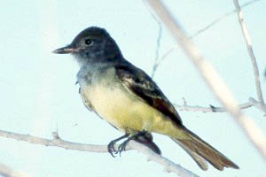
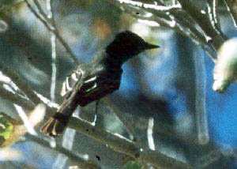

| These photographs accompany records that have been recently submitted to the committee. This record
has been ACCEPTED. Great Crested Flycatcher Myiarchus crinitus 4 Oct 96, 7 mi N of California City, KER 1996-156 © 1996 Matt T. Heindel  Great Crested Flycatcher Myiarchus crinitus 4 Oct 96, 7 mi N of California City, KER 1996-156 © 1996 Jon L. Dunn |